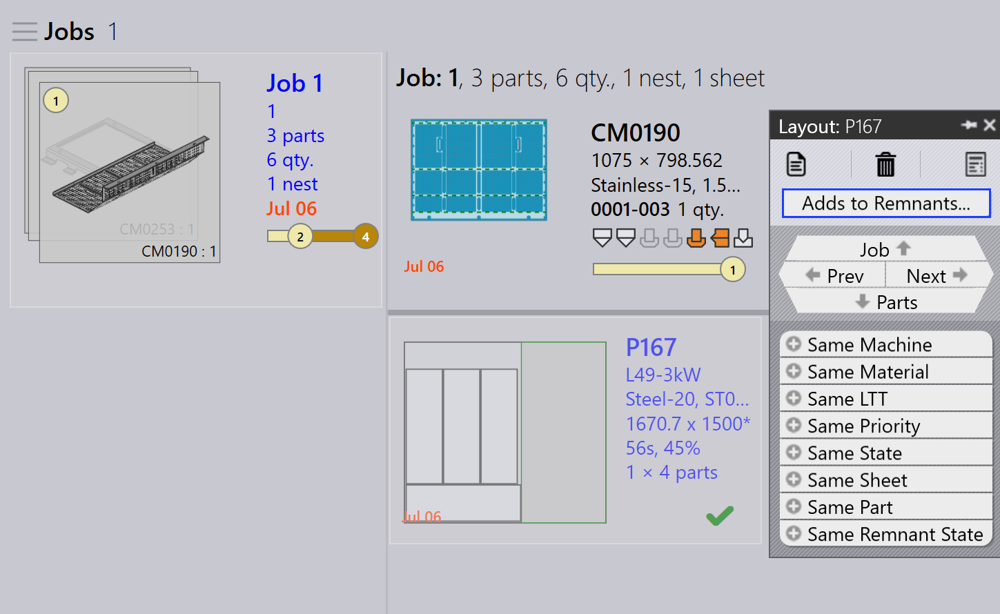

Manuell resthantering
Konfigurera manuell rest
-
Klicka på Fabrik → Inställningar → Jobb.
-
Välj Uppdatera plåtlager på nesting frisläpp/lås.

Detta säkerställer att rester spåras och uppdateras i arklagret när en häck är färdig eller släppt.
Manuellt restark från jobb
-
Högerklicka på en markerad färdig layout (layout med grön färgbock).
-
Klicka på alternativet Lägger till rester….
-
Nu läggs restarket manuellt till i arkdatabasen.

Manuellt restark från jobbhäck
-
Växla till Jobb → Nests-sidan. Använd Filter och välj Tillstånd.
-
Välj Completed för att visa alla färdiga layouter.
-
Högerklicka på layouten som manuell rest behöver skapas för och klicka på Lägger till rester….

Ta bort rester
Om ett manuellt skapat restark är skadat eller förlorat kan ni ta bort det från arklagret utan att ta bort det direkt.
-
Högerklicka på restarket ni vill ta bort.
-
Klicka på alternativet Ta bort från rester….
-
Restarket tas bort från arkdatabasen.
-
Den delvis skuggade fyrkantiga ikonen som indikerar att restarket har skapats rensas också när resten tas bort.

| Restark (skapade av Auto/Manuell) används med hög prioritet under autoplan för häckning eller interaktiv plan för häckning. |